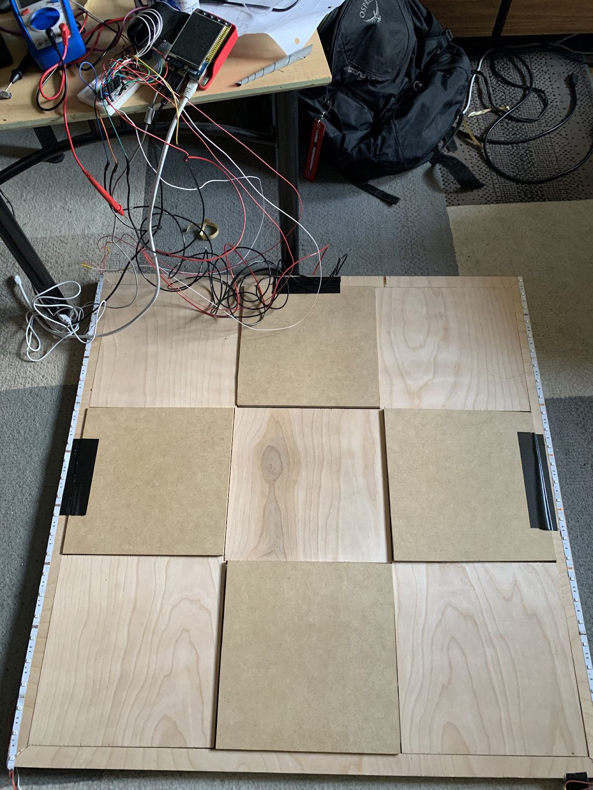
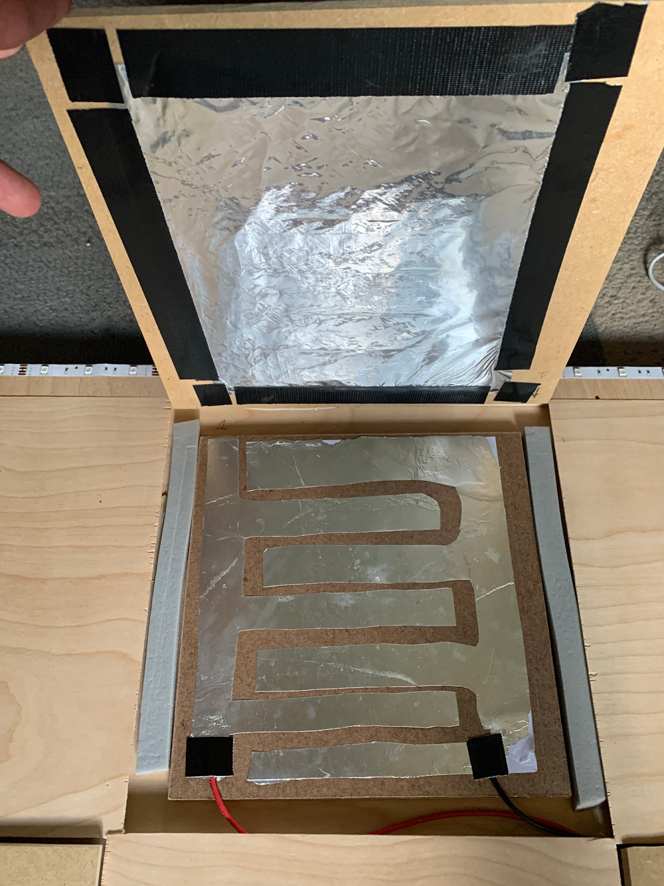
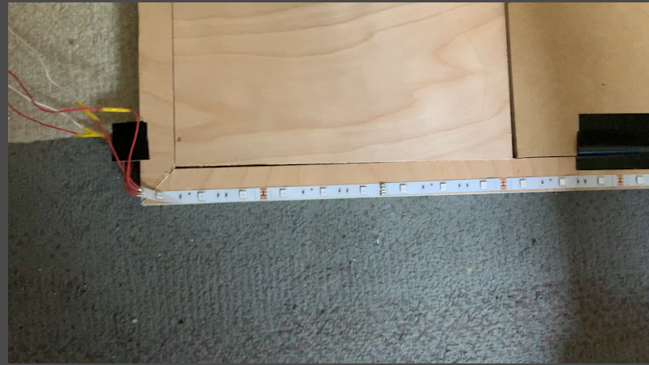

Big Buck Revolution is playable on a full size dance pad with four buttons that the player steps on to hit notes, as depicted below. Each button corresponds with a different arrow direction visible on screen. The buttons interface with the Pi’s GPIO pins, which are connected to pull up resistors. The buttons function by grounding the pin by connecting the signal wire to a common ground.
The button is positioned above the comb shaped contacts by two strips of air conditioning foam on the sides, as shown below. When the player steps down, the aluminum foil duct taped to the back of the button pressed into the contacts, shorting the two together. The contacts are comb shaped so that when the player steps on the button, the aluminum foil will connect the two contacts no matter where pressure is applied. The ground and signal wires are duct taped onto opposite contacts.
In addition, two strips of LEDs on opposite sides of the rim will light up when a button is pressed. Part of one LED strip is shown below. The LED color corresponds to the player’s current multiplier. These strips are connected to each other and to the Pi. They are powered by a 12V 2A wall power converter and receive signals from three GPIO outputs on the Pi, one corresponding to each color.
The original design of the dance pad was provided by Super Make Something in his USB DDR Pad video here.